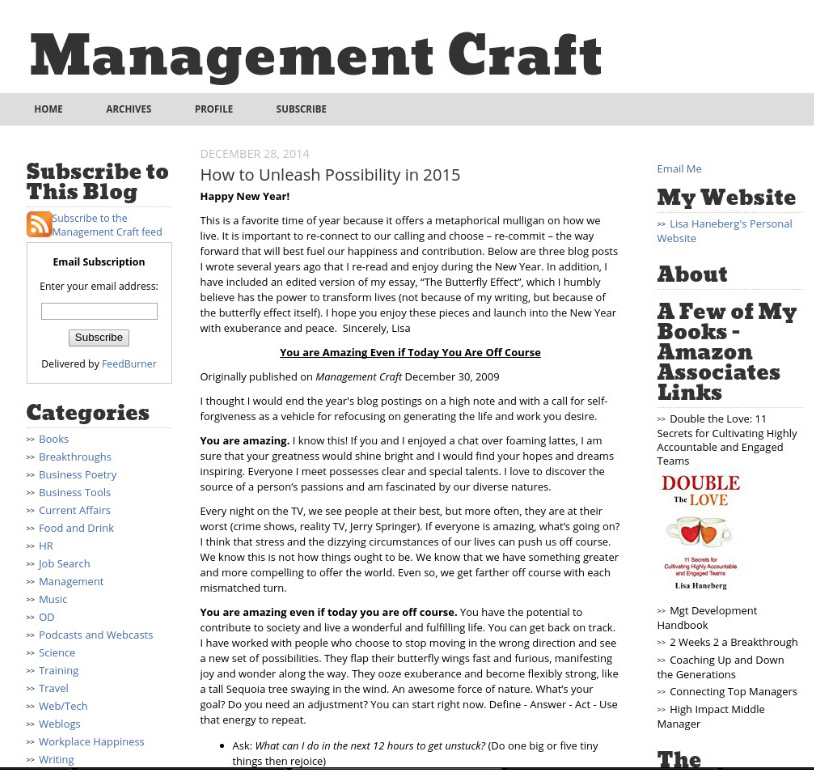
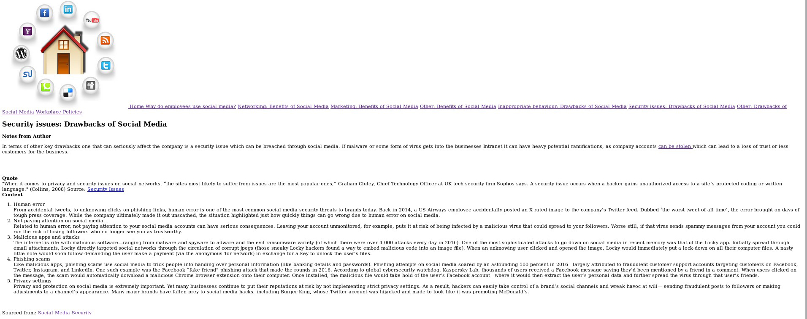
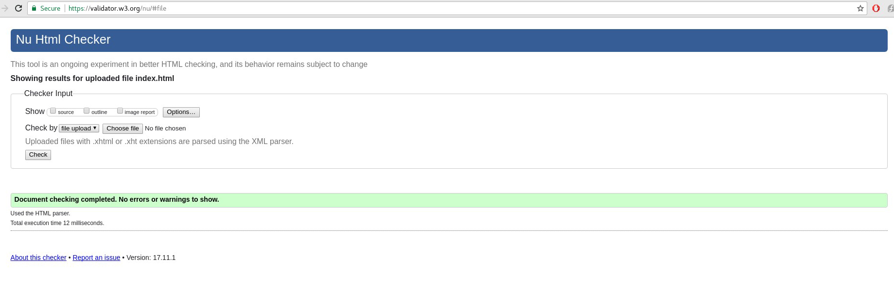

Social Media Website
To see full website please click Here
The first page discussed the background to the employees social media use, I felt this would be interesting to managers and give them awareness of what their employees do and why. My research informed my practice, using pro’s and con’s to demonstrate what positive aspects social media provide, breaking it down into certain points which they could implement. Contrasting this with negative aspects that managers should want to avoid, with the final workplace policies page demonstrating how to limit these negative points.

Design
Regarding the design of the website, once I had an idea of my subject matter and the content I wanted to display. I subsequently started research into how I wished for the website to look. “Like short paragraphs, bullets help readers lightly graze on content to help determine whether they’re in the right place.” (Potts, 2007, P28) In order to appropriately demonstrate my information to the business community I needed to research what was currently being provided for the business community on the subject. The websites that were on the subject were often news outlets, blog type posts or reports. Therefore, I decided to create mine in a similar format, utilising bullet points, lists and short paragraphs in order to represent the information in a simple to understand way.
Through research the consensus regarding eye tracking was that users like to read from left to right. “Eye tracking studies have identified that people scan computer screens in an ‘F’ pattern. Most of what people see is in the top and left of the screen and the right side of the screen is rarely seen” (Woods, 2014). This concurred with the research into similar websites that had a logo or home button on the top left of the page. Therefore, important content such as headers were used on the left hand side making it easier to navigate and view content that interests the user.
The website designs were quite easy to navigate having a clear header with a series of hyperlinks in order to connect to difference pieces of information on the website. Bigman argues that certain attributes are key for good web design, I implemented the following, “good visual hierarchy, web safe fonts, and a minimal colour pallet” (Bigman, 2014).
Implementation
As discussed previously a minimal colour pallet was crucial for good design. Consequently, when designing the website the colours used were designed to be as clear as possible for readers. With white being the most common style used on other websites, with clear web safe fonts on top with black text. This stylistic choice of black text on white backgrounds appeals visually and makes it easy for people whom may have colour-blind issues to be viewable. Furthermore whilst hovering over the text it goes from black to red, this was a design technique I noticed on numerous websites and thought to include it on mine in order to make it explicitly clear that this was a link to a different page on the website.
In terms of good visual hierarchy, the size of my content complemented this stylistic choice. For example, the navigation bar is placed in a large box that has a different shade of colour to the background of the text, consequently distinguishing the links and content. The headers of the text also went down in terms of size, utilising ‘h1’ for the home page, ‘h2’ for the titles and ‘h3’ or ‘strong’ for other titles. This visual hierarchy makes it easier for the user to see what points are important.
HTML
For writing the code there was significant research undertaken, firstly to find the basic html template in order to provide the basis for the rest of the code (W3Schools, 2017). The design of the code was intended to be easy to understand, keeping the level of detail to a minimum in order to be able to create further manipulations later down the line. The basic HTML template provided me with the head, link, body and final HTML formatting.
The text manipulation was created using content gathered over the course so far to implement different types of information to make it easier to read. For example, the ‘h2’ demonstrates to the user that this is a heading as it is bigger than the rest of the text. Furthermore the ‘ul’ and ‘li’ allows the user to see the text in bullet point format showing that this is an unordered list.
Following the basic HTML, I knew I needed a header in order to make it easy to navigate for users. The websites I saw used a differentiating factor in order to demonstrate to the user that the links were clickable.
CSS
As a result I knew I needed to create a CSS file that I could use to implement the stylistic characteristics I wanted from the site. The main CSS information regarding text utilised the basic template from the “Zen Garden” (Shea, 2017). Therefore, with the text fully formatted and adapted to fit my style I attempted to implement a navigation bar, the first attempt allowed for the display of stylised hyperlinks however the text content became hidden behind it. For that reason I searched for a navigation bar which included the ‘.main’ function that fixed the issue regarding the content being invisible to the user (W3Schools, 2017). The ‘navbar’ and ‘body’ for CSS were copied and manipulated from the W3C website in order to appropriately accommodate the information I wanted to display in a way that is easy to understand and aesthetically available (W3Schools, 2017).
The hyperlinks (a=href) and image (img) function in the navigation bar further utilised the course content in addition to references from online sources to appropriately display information. These hyperlinks combined ‘div class – navbar’ in HTML to be appropriately formatted using the CSS ‘.navbar’ in the external style sheet. The colours, padding and floating attributes were changed using the CSS style sheet as was the addition of the hover function which I used from a previous failed button in order to see the text turn red indicating a hyperlink. Consequently the code utilised online sources, personal preferences and content from the course in order to appropriately create a site that was aesthetically acceptable in addition to being functional for all types of users.
Mark-up
I tested the HTML and CSS against the W3 mark-up language validation tool, the CSS and HTML encountered no errors, furthermore I tested the accessibility with AChecker resulting in no problems, with screenshots attached (W3C, 2017).
Conclusion
In conclusion, the website fulfils the criteria as specified regarding valid mark-up, an acceptable level of accessibility whilst providing the information necessary. The website targets my audience of managers through its content and display like that of other management websites. However, if more time was allocated I would improve the CSS, and conduct more research.